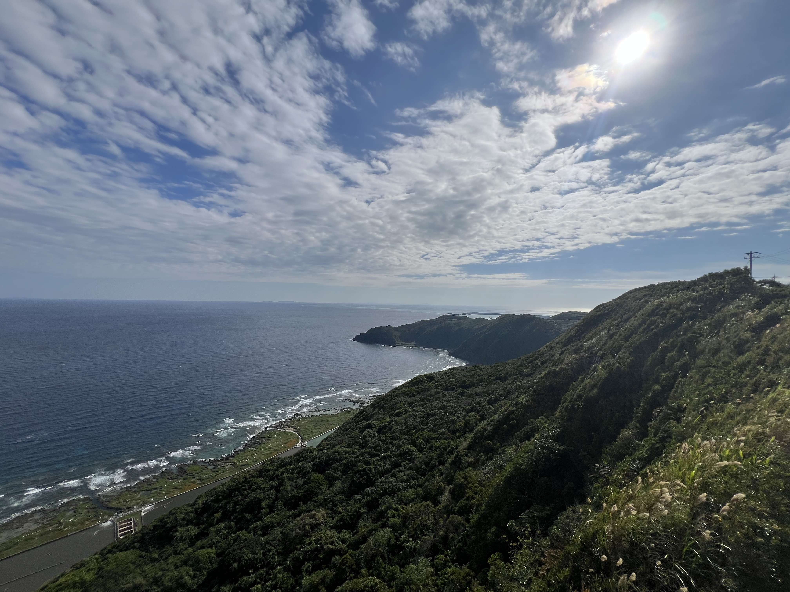
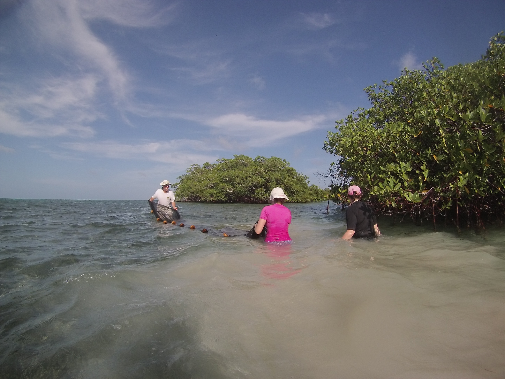
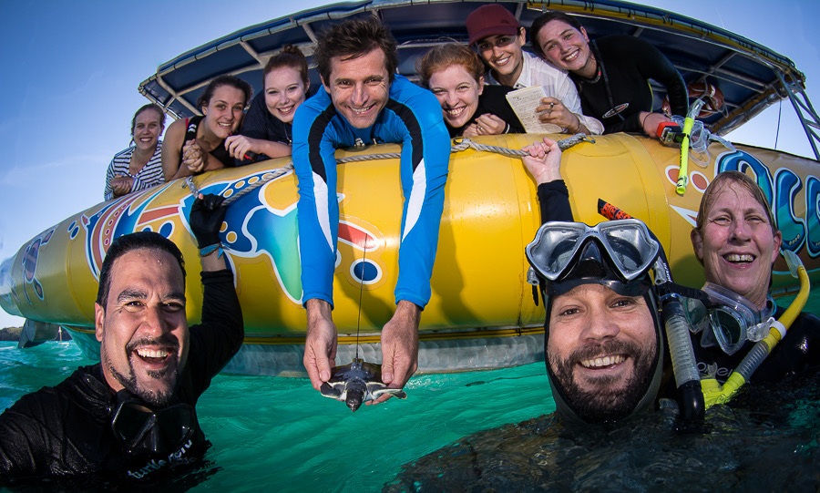
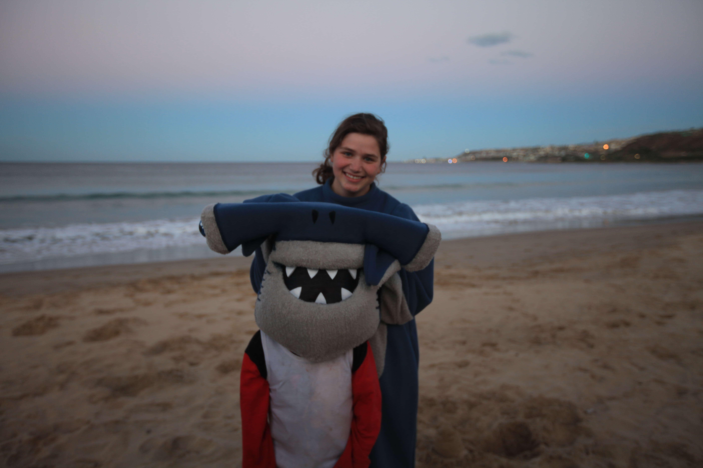

Fieldwork
Fieldwork keeps my research grounded in what fishes do and where they live. I collect specimens, record behavior, survey communities, and document habitats using SCUBA, snorkeling, and freediving.
The people involved are an important part of that work. Fishers, local researchers, fisheries cooperatives, and marine-station staff bring knowledge that helps me choose sites, understand observations, and think of questions I might otherwise miss. I work to keep these relationships useful beyond a single trip, with clear arrangements for collecting, specimen care, data use, recognition, and sharing results.
I am an AAUS Scientific Diver and NAUI Divemaster with more than 500 logged dives. Planning around local conditions, communicating clearly, and considering everyone’s experience are central to how I organize fieldwork.
Ryukyu Islands | 2023 to present

Fish populations and reef communities
OIST has given me a base for working across the Ryukyus. I designed a comparative project to investigate how fishes are connected among islands and whether species show similar patterns along the Kuroshio pathway.
Collecting combines visits to local fish markets with targeted spearfishing on SCUBA and while freediving, working with fishers and fisheries cooperatives. The resulting specimens, tissues, and locality records support genomic, morphological, and taxonomic projects.
A related part of my work uses unattended cameras to record fish communities. At Diamond Beach in Seragaki, Okinawa, the cameras captured assemblages across seagrass, rubble, and coral habitats.
My fieldwork locations include:
- Okinawa Honto
- Miyakojima
- Ishigaki
- Kumejima
- Amami Oshima
- Tanegashima
Moorea, French Polynesia | 2017, 2019, 2021
Watching goatfishes feed
Working from CRIOBE, I collected specimens and recorded goatfishes searching for food in different substrates. Their barbels make it possible to investigate how sensory structures and movement work together during feeding.
Videos and field observations add behavior to the anatomical and evolutionary information I study through specimens. They also help me think about which functional predictions need to be tested in living fishes.
Belize and the Florida Keys | 2014, 2015

Where my connectivity questions began
I worked on the hardhead silverside, Atherinomorus stipes, collecting samples among islands in Belize and the Florida Keys.
The project brought together field notes, locality records, preserved specimens, and mitochondrial sequences to investigate differences within and between island groups. It was an early introduction to questions I still enjoy working on: how does a fish’s association with a habitat relate to its geographic and genetic history?
Australia | 2015
Flatback sea turtles
At James Cook University in Townsville, Queensland, I helped with the care, tagging, and release of juvenile flatback sea turtles.

South Africa | 2013

What happens after a trip?
Much of the work continues after collecting. Specimens need preparation and cataloging, tissues need reliable labels, and observations need to stay connected with the material they describe.
At OIST, I helped set up the fish collection and developed protocols that students can use as they learn preparation and molecular workflows. I am also building three-dimensional specimen models to connect with genomic datasets.
I plan to share these models and genomic resources online so researchers can work with the data remotely. Making specimen information easier to reach is especially valuable for colleagues who face financial or geographic barriers to visiting collections, including researchers in the Global South.